Gameboy Games S - Z
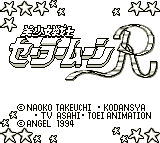
Controls
- A button: Talk/Jump
- B button: View Map/View Stats/Shoot
- Start: Pause
- Select: [not used]
This is a action and puzzle game. The first part of each level has your
character walking around talking to people and playing games of chance.
Eventually, you will do all the actions necessary to proceed to the action
portion. It is your basic side-scrolling, "shoot-em-up" action sequence.
The game has a lot of dialogue but very little replay value.
A complete walkthrough
is available at TELE-Pathetic Industries.
After pressing any button at the intro. screen, you will be presented with
four choices. From playing the game, the choices are set up in this manner:
- Start New Game
- Enter Password
|
- Practice Battle Levels
- Practice Games of Chance
|
| Level # |
Password |
Character |
| 1 |
NONE |
Sailor Moon (Usagi) |
| 2 |
2 6 5 6 0 4 1 6 |
Chibi-Usagi
Sailor Mercury (Ami) |
| 3 |
4 5 6 6 1 7 4 8 |
Sailor Mars (Rei) |
| 4 |
6 1 9 7 2 8 3 - |
Sailor Jupiter (Mako) |
| 5 |
8 1 1 7 3 9 5 5 |
Sailor Venus (Minako) |
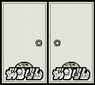
This appears to be a war-strategy game. Haven't been able to figure out how
to play it much yet.
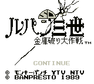
Controls
- A button: Jump
- B button: Raise Floor/Lower Floor
- Start: Pause
- Select: Item Inventory
This is a puzzle game. You guide Lupin to find the treasure on the level.
You must avoid Zenigata and other enemies; along the way you can find help
from Jigen, etc.
The graphics are not that great, but the puzzles are interesting to solve.
Overall, it is not a very good game (but I like it because I am a HUGE Lupin
fan).
![[Shin SD Gundam Gaiden: Knight Gundam Story]](../images/GB/gun_cap.gif)
Controls
- A button: Open Chests
- B button: Use Shield/Weapon(?)
- Start: Item Inventory
- Select: [not used]
This appears to be a Zelda-style RPG. Haven't played it much yet.
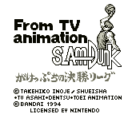
Controls
- A button: ???
- B button: ???
- Start: Pause
- Select: [not used]
This is a basketball game based on the popular anime. It isn't a pure
basketball game though; it uses a strange card system to make your plays. A
card allows you to pass, shoot, or dribble around a person. I don't know
enough Japanese to figure out what card does what. The game allows you to go
through a story mode(?) or just play a single game.
Controls
- A button: Shoot
- B button: Pass
- Start: Pause
- Select: [not used]
This is a basketball game based on the popular anime. It is easier to
play than the first one was, but the controls still take some practice to understand them.
You see a top view of the court with all your players listed as numbered
circles. The player with the ball is a completely solid circle. When you shoot,
you are given a bar with a moving cursor. You hit the shoot button again when
it is in the dark band of the bar for a more accurate shot. There are other times when
you confront an opposing player and must dribble or pass around him, or you are
defending against an opposing player and must try to steal the ball or stop
him from going around you.
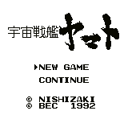
Controls
- A button: Select a Ship/Unselect a Ship/Fire Particle Wave Cannon
- B button: Show Ship Statistics
- Start: End Turn/Pause
- Select: [not used]
This appears to be a war strategy simulation where your army is the heroic
crew of the Yamato.
| Level |
Password |
| 1 |
N T D S 6 O I L |
| 2 |
O B I D Y 7 H L |
| 3 |
P Z M Q Q 5 J L |
| 4 |
Q M T G G G G J |
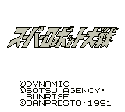
This is your typical war strategy simulation. You get to choose from
three teams of famous mechas. Team one is the Gundam team. Team two is
the Mazinger Z team including Mazinger, Great Mazinger, Aphrodite-A, and
Diana-A. Team three contains Shin Getter Robo, and the Shin Getter 2,
some female robot, and Texas Jack. -- from Susano Orbatos
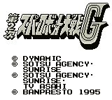
This is your typical war strategy simulation where you get to control some
of anime's most famous mechas from Gundam and similar shows. A
tutorial
on how to play the game can be found at Lond Bell.
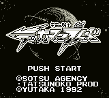
Controls
- A button: Jump
- B button: Use Weapon
- Start: Power List
- Select: Pause
This is a horizontal-scrolling, platform game. You start out with your trusty
spear. By holding the B button down for a while, you can throw your
spear at an enemy. You must then pick up your spear to use it or wait a minute
for it to automatically return. Without your spear, your weapon is a whip with
a blade on the end. It can hurt enemies but not as much as the spear. The whip
can also be used while jumping to grab the ceiling. The "Power List" brings up
a list of Tekkaman powers you can use. They range from jet boosters to the
powerful Tekkaman cannons. While you move around the level, your energy builds
up allowing you to choose different powers. Using a power will drain the energy
meter. To jump higher than normal, hold down before jumping.
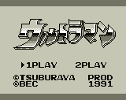
Controls
- A button: Kick
- B button: Punch
- Start: Jump
- Select: Pause
This is a street fighter game. You control Ultraman as he battles various
monsters. The graphics are poor, and the game control just plain sucks. This
game is for collecting only, not playing.
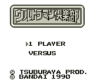
This is a war-strategy game with a unique battle system. The attacks and
defense of the characters are based on some sort of card system. Whoever has
the better cards will win the battle. Haven't figured out the game play yet.
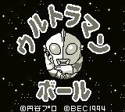
Controls
- A button: Jump
- B button: Change into a Ball/Change Back to Ultraman
- Start: Pause
- Select: [not used]
This is a Mario-style, vertical scrolling game. Ultraman has the ability to
turn himself into a ball (hence the title). In this form, he can bounce to
high platforms and break bricks. It is a cute game but not outstanding.
![[Ultraman Gekiden]](../images/GB/ugek.gif)
Controls
- A button: Jump
- B button: Punch
- Start: Pause
- Select: [not used]
This is a Mario-style, vertical scrolling action game. Ultraman attacks with
a standard punch, but he can also power-up and release a weapon by holding
down the punch button. You get a different weapon depending on how long you
hold down the punch button. The graphics are adequate, but there is nothing
outstanding about the game.
![[Urusei Yatsura MISU Tomobiki wo Sagase!]](../images/GB/uy_gb.gif) The intro starts with Ataru and Lum walking/flying to school saying they should
hurry up, but when they get there Megane comes running screaming: "Ataru!
It's WEIRD! Look over there!" There is a plaque are which says something about
a Miss-contest, and what I understand is that Lum will compete...
The intro starts with Ataru and Lum walking/flying to school saying they should
hurry up, but when they get there Megane comes running screaming: "Ataru!
It's WEIRD! Look over there!" There is a plaque are which says something about
a Miss-contest, and what I understand is that Lum will compete...
In the game you are Ataru. You wander about through the halls of Tomobiki
Highschool fighting Urusei Yatsura characters like Lum's Stormtroopers,
Benten, Ran and many others.
At certain places certain coordinates are given to you. You should go to them
and finish any business you have there. You will then recieve new coordinates
(given you walk in the right place!). Here's a list and some hints. You still
have to play the full game, because things appear only when you've been told
the coordinates! -- Patriek Lesparre
| Character |
Coordinates |
| Ran |
(14,11) |
| Ten |
(3,8) (defeat him, then return to Ran) |
| Stairs to 2nd floor |
(3,5) |
| Sakura |
(1,14 2nd) |
| Stairs to 1st floor |
(7,7) (use this one to get to ?) |
| ? |
(6,11 1st) (defeat ?, then return to Sakura) |
| Stairs to 3rd floor |
(13,5 2nd) |
| ?? |
(3,12 3rd) (defeat ??, then return to Sakura) |
| Stairs to 4th floor |
(9,1 3rd) |
| Oyuki |
(9,3 3rd) |
| Rei |
(5,4 3rd) (defeat him, then return to Oyuki) |
| Stairs to 5th floor |
(1,9 4th) |
| Hennatori (Weird bird) |
(4,11 on some unknown floor) |
Controls
- A button: Jump
- B button: Attack
- Start: Pause
- Select: Inventory
This is a Mario-style platform game. Jump and fight your way through the levels.
![[Yuu Yuu Hakusho]](../images/GB/yuu1_cap.gif)
Controls
- A button: Charge and Use Spirit Power
- B button: Punch/Kick
- Start: Item Menu
- Select: [not used]
This game is a street fighter game with two different story modes and a
versus mode. In the story modes, you progress along a path fighting various
enemies. You get to choose from different characters to fight as depending
on where you are in the story. During the fight, you have three "spirit
points" at your disposal. You use these buy holding down the punch button
to charge you spirit meter. When the spirit meter is fully charged, release
the punch button, and your spirit attack will be unleashed.
The graphics are good, and the game play is better than most Gameboy games.
The fighting isn't as complex or challenging as most games these days, but
it is an entertaining game.
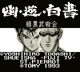
Controls
- A button: Punch
- B button: Kick
- Start: Pause
- Select: [not used]
This is your standard street fighting game. You can choose from the story
mode, team battle mode, or versus battle mode.
In the story mode, you control a team of five characters in the Underworld
tournament. Before each battle, you can choose which character to use and how
much "power" and "spirit" he has in reserve. There are two bonus games during
the tournament that allow you to increase the amount of "power" and "spirit"
available.
The team battle mode allows you to choose five characters from any of the
characters in the game. Your team will then face a computer or second player
controlled team of five players to see who is the best team.
After playing the game a few times, you can pick up on the right character and
strategy to beat each opponent. The order of the tournament opponents never
changes, so the only replay value comes from trying to figure out how to do
each character's special moves.
After pressing any button at the intro. screen, you will be presented with
four choices. From playing the game, the choices are set up in this manner:
- Story Mode
- Team Battle Mode
|
- Versus Battle Mode
- Options
|
| SPECIAL MOVES LIST (massively incomplete) |
| Character |
Special Moves |
| 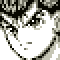Yuusuke |
Fireball: Away, Down, Down-Towards, Towards+Punch
Rapid Punch: Down-Away+Punch
Flying Rapid Punch: (in air) Down-Away+Punch
|
| 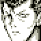Kuabara |
Long Sword: Away, Down, Down-Towards, Towards+Punch
|
![[Kurama]](../images/GB/kuram.gif) Kurama Kurama |
Leaf Shield: Away, Down, Down-Towards, Towards+Kick
|
| 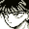Hiei |
Rapid Hands: Down, Down-Towards, Towards+Punch
|
| 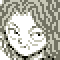Genkai |
Rapid Hands: Down, Down-Towards, Towards+Punch
Flying Rapid Hands: (in air) Down, Down-Towards, Towards+Punch
Fireball: Away, Down, Down-Towards, Towards+Kick
|
![[Chu]](../images/GB/chu.gif) Chu Chu |
Whirling Kick: Towards, Down, Down-Away, Away+Kick
Fireball: Away, Down, Down-Towards, Towards+Punch
|
![[Jin]](../images/GB/jin.gif) Jin Jin |
Dashing Attack: Away, Down-Away, Down, Down-Towards, Towards+Punch
Whirling Attack: Away, Down, Down-Towards, Towards+Kick
|
![[Toguro Elder]](../images/GB/t_eld.gif) Toguro Elder Toguro Elder |
Electric Field: Away, Down, Down-Towards, Towards+Kick
|
| 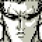Toguro 80% |
Fireball: Down, Down-Towards, Towards+Punch |
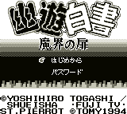
This game is part Zelda RPG, part side-scrolling fighting game. You move
around the city talking to various characters. After talking to the right
people or finding the right item, you enter an area where you walk around
fighting people until you reach the level boss. You have a spirit meter,
but I haven't played the game enough to figure out how to pull of any
special moves.
While the fighting sequences and graphics aren't that impressive, I find
the concept of the game interesting. Figuring out the special moves and
finding out where the stories are going will keep you busy for awhile.
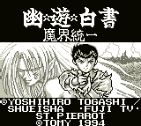
Controls
- A button: Kick
- B button: Punch
- Start: Pause
- Select: [not used]
This game really shows off what the Gameboy can do. It returns to the
fighting style of Yuu Yuu Hakusho 2. The backgrounds and graphics are superb.
You can choose from the story mode, versus mode, and an amusing mode where
the women from Yuu Yuu Hakusho basically try to hit each other with bats
more times than their opponent.
After pressing any button at the intro. screen, you will be presented with
four choices. From playing the game, the choices are set up in this manner:
- Story Mode
- Female Combat Mode
|
- Versus Battle Mode
- Options
|
© 1997 - Luis A. Cruz